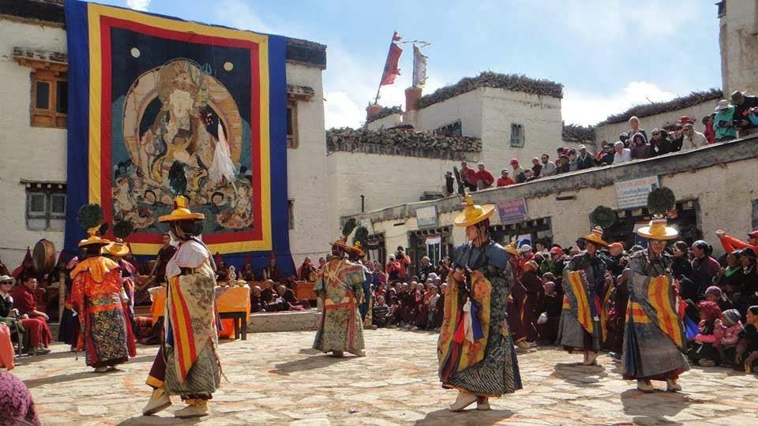
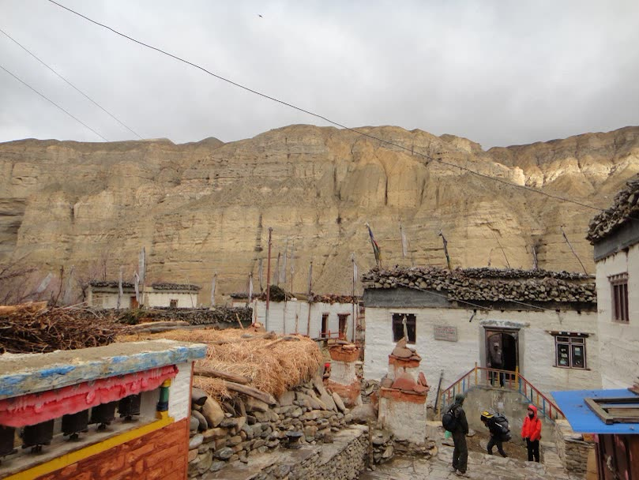
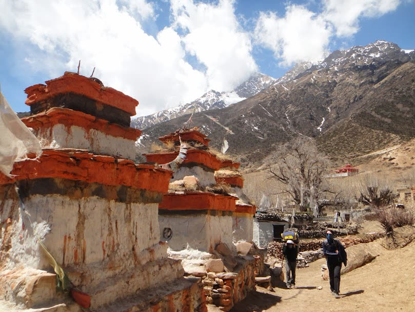
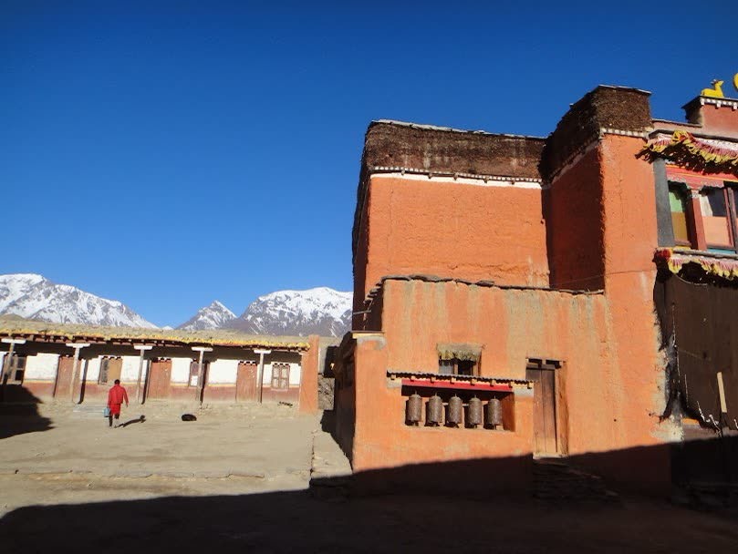
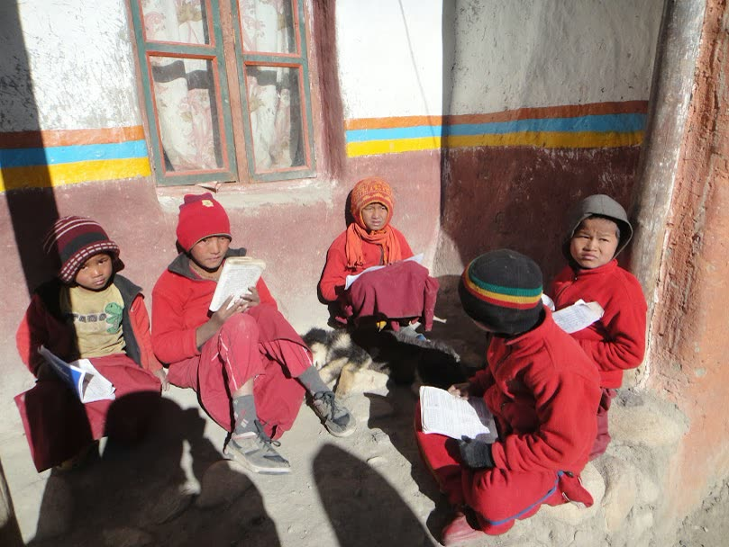
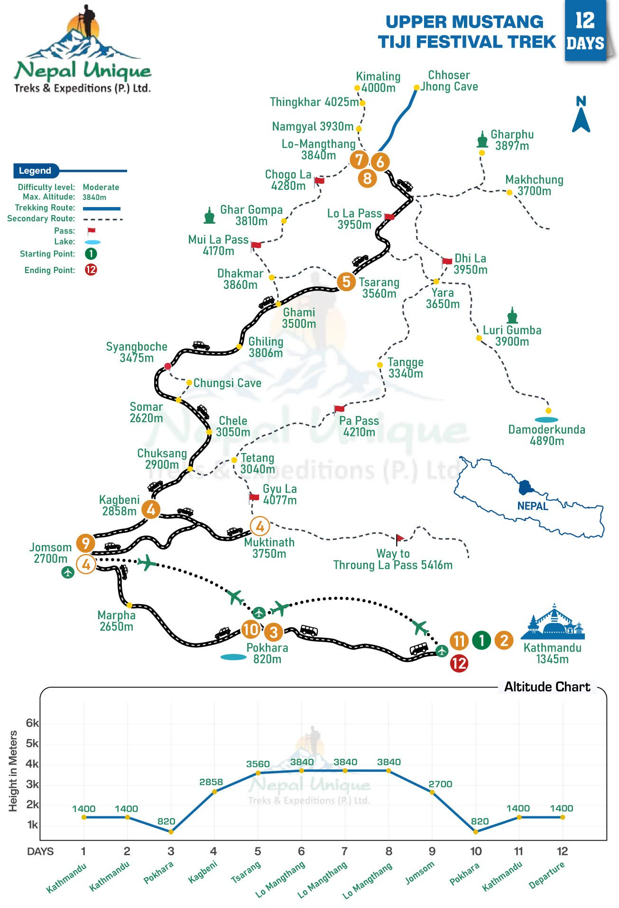

Upper Mustang Tiji Festival Trek
Join the Upper Mustang Tiji Festival Trek 2027 and experience the vibrant Tibetan Buddhist celebration in the Forbidden Kingdom. This tour package is a once-in-a-lifetime opportunity to explore ancient monasteries and stunning landscapes, and celebrate a unique festival in Mustang.





Key Trip Facts
Trek Overview
Trip Highlights
Upper Mustang Tiji Festival Trek Overview
Join the Upper Mustang Tiji Festival Trek 2027 and experience the vibrant Tibetan Buddhist celebration in the Forbidden Kingdom. This tour package is a once-in-a-lifetime opportunity to explore ancient monasteries and stunning landscapes, and celebrate a unique festival in Mustang. If you want to immerse yourself deep into Mustang's culture and tradition while also exploring that region, you should not miss this Tiji Festival Tour in Upper Mustang at all.
During this tour, we followed the same itinerary as the regular Upper Mustang Trip. However, the departure and itineraries will be fixed because we will also participate in the celebration of the Tiji Festival. Along with the magical and mystical adventures of the Mustang region, the tour also gets to experience a completely different celebration and some outstanding cultural showcases.
About the Tiji Festival
Tiji Festival is one of the most significant festivals celebrated in Upper Mustang's Lo Manthang city. As per the locals of this area and the holy history, they started celebrating this festival about 300 years ago. Since then, the Upper Mustang region has celebrated the festival every year on the June 1st to June 3rd, 2027 as per the lunar calendar. Again, believing in the historical mythologies and religious beliefs, the word "Tiji" stands for "Tenchi", short for Tenpa Chirm, and this means prayer for world peace.
So, if we closely analyze the name and meaning of the festival, we can know that the festival is celebrated every year to pray for world peace. Well, the locals of this area started this festival as a celebration of victory over evil. Besides, this festival is also deeply rooted in the mythological tales of Dorje Jono (Vajrakila), a revered deity in Vajrayana Buddhism. Now let's come to the major significance of the Tji Festival. Guided by the wisdom of Padmasambhava (Guru Rinpoche), the great spiritual master who introduced Buddhism to Tibet, Dorje Jono emerged victorious, restoring peace and prosperity to the land. So, this festival represents victory and his triumph.
More about Upper Mustang
Upper Mustang, also known as Nepal's Forbidden Kingdom, is a remote, high-dessert region located between the altitudes of 2,800 meters and 4,000 meters above sea level. In Nepal, people call it "Dada Paariko Desh," meaning "a place beyond the Himalayas". Do you know why? That's because the mountains can be seen on the south side from Mustang, unlike from other places, where the mountains are located in the north direction. Did you know that the Mustang Region Trek used to be an independent Tibetan Kingdom until 1790?
Here, we can witness a barren moonscape of eroded sandstone pillars and discontinuous moraine terraces, which together present a colorful variety of landscapes. The drive to Upper Mustang takes us through the treeless, barren landscape, and the region lies in the rain shadow of the Himalayas, where strong winds generally howl in the afternoon.
If you book the Upper Mustang Tour with Tiji Festival in 2027, the journey from Kathmandu, the Nepal Unique Treks guides take you on a flight to Pokhara on the third day. Well, the first two days of the package will be utilized to prepare for the tour and stroll around Kathmandu. After spending a night in Pokhara, followed by a flight to Jomsom and a drive to Muktinath, we begin the drive towards Upper Mustang. The entire tour takes 12 Days to complete, and out of these days, we participate in the Tiji Festival for three days before returning from the tour.
Benefits of Choosing Nepal Unique Treks
Choosing Nepal Unique Treks for the 12-Day Tour to Mustang for the Tiji Festival doesn't just mean that you sign up for the trip. Booking this trip with us means setting yourself up for a seamless, authentic, and unforgettable Himalayan adventure, along with cultural and religious insights. Here's why Nepal Unique Treks stands as the perfect choice for travellers to head on for any adventure in Nepal:
The best thing about choosing Nepal Unique Treks for this tour is that you are accompanied by a travel agency with over 20 years of experience.
Moreover, our locally trained, license-holding guides also have over a decade of experience. Therefore, they can help you interact with the locals while also managing the day-to-day itinerary.
We make sure to arrange a safety-checked, environmentally friendly vehicle driven by a professional driver with a valid license and experience of driving on this route.
The Nepal Unique Treks and Expeditions team also makes sure that the travellers get a proper chance to participate in and enjoy the Tiji Festival.
With our team, you can also expect hygienic and healthy food along with cozy and comfortable accommodation throughout the journey.
In the package cost, we also cover the permit cost, TIMS card cost, round-trip food, and accommodation.
The Nepal Unique Treks team highly supports and practices sustainable and environmentally friendly trekking. Therefore, we make sure that no natural resources are misused, no place is left dirty, and no culture or religion is hurt throughout the tour we manage.
One of our priorities will be the health, safety, and well-being of the travelers, along with adventure and fun. Therefore, you will be accompanied by a highly interactive, friendly, and supportive team.
Mustang Tiji Festival Tour Permits
Even though travellers have been allowed to enter the Mustang region for a very long time, a special permit is required to regulate tourism. Therefore, you must obtain an Annapurna Conservation Area Permit to enter the conserved area of the Annapurna Region Trekking , which also covers the Mustang region. This permit can be obtained from the Nepal Tourism Board Office in Kathmandu (Bhrikutimandap). Once you obtain the permit, you can spend 10 days in the Mustang region. However, after 10 days, you need to pay 50$ extra for each day's stay.
Mustang Tiji Festival Tour Cost for 2027
Nepal Unique Treks offers good pricing options for any trekking, tour, or any other adventurous journey, including the 12-Day Mustang Tiji Festival Tour. We understand that affordability stands as one of the most important factors to determine whether one can or cannot go on the tour they want. Therefore, we recommend that trekkers check out the Mustang Tiji Festival Tour cost for 2027 from the table below before you confirm the package.
Upper Mustang Tiji Festival Trek Itinerary: Day by Day
12 Days program for Upper Mustang Tiji Festival Trek. Daily timings and sequences remain flexible according to weather, flight operations, and group pace.
Day 1: th May 2025: Arrival in Kathmandu, 1345 M.
Approx. 1,345 m / 4,413 ft
Our guides welcome you to Nepal at the Tribhuwan International Airport on the first day. From there, they transfer you to the hotel, where you again get welcomed with a refreshing welcome drink. You can check into your room, freshen up, and then stroll around the city. In the evening, the Nepal Unique Treks & Expeditions team invites you for a welcome dinner. You will also meet your guide for the first time in this dinner program.
Day 2: th May 2025: Kathmandu Valley Sightseeing and Trek Preparation.
Approx. 1,345 m / 4,413 ft
On the second day, the Nepal Unique Treks & Expeditions team takes you on a quick yet amazing sightseeing tour of the Kathmandu valley. During this day tour, you can visit different significant spots in the city, including Bouddhanath Stupa, Swayambhunath Temple, and the Pashupatinath Temple. Moreover, the tour also allows you to visit some heritage sites, including the Basantapur, Patan, and Bhaktapur Durbar Squares. Besides, we also recommend the trekkers to try some locally-prepared delicacies during the tour. We return to the hotel by the early afternoon and utilize the rest of the day to prepare for the tour. For that, you will meet the guide leading you on the tour and listen to the instructions and briefs they provide. After that, the travellers have another delicious dinner and sleep.
Day 3: th May 2025: Fly Pokhara and Half day sightseeing in Pokhara. (25 mins flight)
Approx. 810 m / 2,657 ft
Our journey towards Upper Mustang and the Tiji Festival starts on the third day. After having breakfast in the hotel, the local representatives of Nepal Unique Treks will drive you to the airport. From there, you will board a 25-minute adventurous, picturesque, and exciting flight to Pokhara. Again, our local guides will drive you to the hotel from the Airport, where you can freshen up and store the heavy backpacks. Once that's done, our guides will take you on a half-day Pokhara city exploration. During this time, the travellers will visit the International Mountain Museum, David Falls, Gupteswar Mahadev Cave, and the World Peace Stupa (Pagoda) before returning to the hotel. That is how the third day of this Mustang Tiji Festival Tour ends.
Day 4: nd May 2025: Fly from Pokhara to Jomsom drive to Muktinath - Kagbeni
Approx. 2,804 m / 9,199 ft
On the fourth day, we leave Pokhara and go for another flight. This time, the flight will be for 2 hours and 20 minutes, and we will travel from Pokhara to Jomsom. As you land in the Jomsom Airport and meet our guides waiting for you in a 4WD jeep, we go for an exciting drive. This drive takes you past some well-pitched roads as well as offroads with views of mystical Himalayas and settlements. Within a few hours of driving, you reach one of Nepal's most sacred pilgrimage sites for both Hindus and Buddhists, the Muktinath Temple. Here, the travellers can not only immerse themselves in the religious vibe but also witness an ever-burning flame and experience the Himalayan tranquility. Besides, you can also go for a quick shower under 108 taps in Muktinath. As per the myths, bathing under all of these taps can wash away sins. After visiting the Muktinath temple and having a quick lunch break, the guides take you on another drive towards Kagbeni. Kagbeni is a charming ancient village located at the entry point of Upper Mustang. Here, the travellers can witness medieval alleys, traditional mud-brick houses, and breathtaking views of the Kali Gandaki River valley.
Day 5: rd May 2025: Drive to Tsarang. Drive 7 hours/ around 40 km.
Approx. 3,070 m / 10,072 ft
After enjoying another delicious breakfast in Kagbeni, we advance further on the Mustang Tiji Festival Tour route. However, before that, the guides will take you for a quick visit to the nearby monastery. Today, the drive advances through rugged mountain trails, barren cliffs, ancient caves, and timeless Tibetan-influenced villages. SO, keep your eyes and cameras on. After a few hours of driving, we notice the landscapes from the lush Kali Gandaki Valley to the strikingly arid terrain. This means that we are approaching near to the Forbidden Kingdom. As you drive deeper into Mustang, you’ll pass through culturally rich villages like Tangbe and Samar. Here, you will also witness the whitewashed houses, prayer wheels, and chortens. We will reach Tsarang village by late afternoon. After that, the travellers can explore this historic village perched on the edge of a deep gorge. Moreover, you can also pay a visit to the ancient monastery and, traditional Mustang palace in this village.
Day 6: th May 2025: Drive to Lomanthang (3,840 m.) and Participate in the first day of TIJI Festival.
Approx. 3,840 m / 12,598 ft
May 24 is the most significant date for the Mustang Tiji Festival Tour Package because it's the first day of the festival. However, to participate in this festival, we need to reach Lo Manthang, a village located at an altitude of 3840 meters above sea level. It takes about 2 hours for the 4WD jeep to take us from Tsarang village to Lo Manthang. Well, we will certainly drive over some of the worst off-road sections of roads on this day with picturesque views of the Nilgiri, Tilicho, and Annapurna ranges. Moreover, we also recommend the trekkers to stay aware of altitude sickness as we have exceeded the maximum altitude. As you reach Lo Manthang, you will feel as though you have stepped into a living museum. The whitewashed mud brick houses, narrow alleyways, and centuries-old monasteries seriously feel like a different world. Moreover, this village also showcases a traditionally and religiously influenced lifestyle. Other than that, you also get to participate in the first day of the most-awaited Tiji festival. On this day, the local monks of Chhode Monastery perform sacred masked dances and rituals in the main square. This performance reenacts the mythical battle between Dorje Jono (Vajrakila) and evil spirits. Furthermore, the entire village echoes the sound of drums, offering you a rare glimpse into Mustang’s preserved Buddhist traditions.
Day 7: th May 2025: Celebrate the second day TIJI Festival.
Approx. 3,840 m / 12,598 ft
Well, the celebration has not ended yet, as there are still two more days of the Tiji Festival celebration. Just imagine waking up at an altitude of 3840 meters above sea level with the majestic views of the Himalayas. That's what happens on the seventh day. After you freshen up and have a delicious breakfast in the hotel, prepare to immerse yourself in the second day of the Tiji Festival. The ritual performances take a more dramatic and symbolic turn on the second day. Watching the monks from Chhode Monastery wrapped in colorful costumes, faces covered by intricate masks, will certainly give you chills. But wait until they start to perform sacred dances known as Cham, because that's where you freeze. This amazing depiction of the continued battle of Dorje Jono (Vajrakila) against the evil forces shows how threatened the society and community were at that moment. Besides the dance and performances, you will also witness elaborate ceremonies, powerful chants, and ritualistic reenactments. All these art forms reflect the triumph of good over evil and tell an ancient story deeply rooted in Tibetan Buddhism. Tiji is not just a festival, it's a belief, a living tradition that connects the people of Mustang to their history. That's another reason why this celebration stands out as important in the Mustang region. Well, after enjoying the whole day of the Tiji Festival, you will have dinner and spend another night in Mustang.
Day 8: th May 2025: Third day TIJI Festival. (FESTIVAL END).
Approx. 3,840 m / 12,598 ft
Today marks the final day of the three-day Tiji Festival. However, the action and performances haven't ended yet because we still have the whole day. Freshen up, have your breakfast, and get ready to witness the grand closing of the Tiji Festival. The last day highlights the destruction of the evil forces, and the performances showcase how Dorje Jono won against the evil. This ultimately signifies the victory of peace, prosperity, and harmony over darkness and suffering. Doesn't that sound amazing? The entire village will be so happy, cheerful, and you can also explore different stalls in the "Mela". As the festival concludes, the atmosphere in Lo Manthang is filled with joy, spiritual satisfaction, and a deep sense of community. After that, we recommend the travellers to take as many photos and videos as possible to capture the memories. Overnight stay and dinner will be arranged at the same hotel in Lo Manthang.
Day 9: th May 2025: Drive back to Jomsom. (Drive 8 hrs / around 70 kms).
Approx. 2,743 m / 8,999 ft
Finally, after such an amazing experience in the Lo Manthang Festival, it's time to return from the Upper Mustang Tiji Festival Tour. After you have your breakfast and get ready with your backpacks, the guides drive you directly to Jomsom. It takes about 8 hours for u to cover this section of the tour, which stretches for about 70 kilometers. Even though the distance does not seem too much, the snake path, offroads, and dust make it a little longer. As we reach Jomsom, you can check in at the hotel and store your backpacks. After that, we recommend that you visit the Apple Orchards in this village and also try out some locally farmed apples. Moreover, you can also try the Apple chips and other local products like ghee, cheese, etc. In the evening, you will have dinner and stay for the night at Jomsom.
Day 10: th May 2025: Fly back to Pokhara.
Approx. 807 m / 2,648 ft
Well, it is your last day in the Annapurna region, as today we are about to fly back to Pokhara from Jomsom. Enjoy your last breakfast in this region because after that, the guides will drive you to the airport. From there, you will board a 25-minute flight to the Tribhuwan International Airport (Kathmandu). At Pokhara's Airport, you will again meet our local representatives, who will drive you to the hotel in a private vehicle. Check in at the hotel and go for a much-needed rest. Besides, you can also relax in the sauna room or go for a quick massage in the nearby massage centers. Also, it will be the last day to meet with your guides in Pokhara. Also, you can enjoy the nightlife of the Lakeside because, believe us, that's the best! Overnight stay and dinner will be done in the hotel for the last time in the Mustang Tiji Festival Tour.
Day 11: st May 2025: Drive from Pokhara to Kathmandu
Approx. 1,345 m / 4,413 ft
Today, the travellers will return to Kathmandu on a 7 to 8 hour drive in a local bus. This adventurous and thrilling drive takes us through several villages, forests, waterfalls, rivers, etc. You will start the drive from the peaceful surroundings of Pokhara, and by the end of the trip, you can again find yourself in the bustling city of Kathmandu. After checking in at the hotel, we recommend you go for a deep relaxation, whether in sauna, massage therapy, or to grab some beer in a nearby pub or bar. In the evening, we invite you for a farewell dinner where we will also have some talks before we officially put an end to the Upper Mustang Tiji Festival Tour 2025.
Day 12: nd May 2025: Final Departure.
Approx. 1,342 m / 4,403 ft
Finally, it's the time when you return home after almost two weeks of exploration. Besides, if you want and have time, we can also arrange another adventurous journey like Annapurna Base Camp Trek, Mardi Himal Trek, EBC Trek, and many more. Otherwise, our local representatives will drive you to the airport as per your flight schedule and bid a farewell.
What is Included (Regular Package)
What is Excluded
Booking Dates & Availability
Packing List for Upper Mustang Tiji Festival Trek
Don't have it? Rent sleeping bags, down jackets, or poles in Kathmandu or arrange with us.Hiking Gear (5 items)
Layering & Clothing (5 items)
Sleep, Toiletries & Documents (3 items)
Read before you book: Upper Mustang Tiji Festival Trek
Practical logistics derived directly from this package's route facts, inclusions, and elevation profile.
Accommodation & Meals (Hotel, Lodge & Tea House)
Accommodation follows the package grade (Hotel, Lodge & Tea House) in Kathmandu and along the Mustang route. Check your package Includes section for included meals and Kathmandu hotel nights.
Permits & Local Logistics
Transportation is arranged via Flight & Private Car. Applicable permits listed in the package inclusions are arranged by Nepal Unique Treks prior to departure.
Route Difficulty & Elevation (3840 m)
Upper Mustang Tiji Festival Trek is rated Adventurous with a maximum elevation of 3840 m. Follow your guide's pacing and stay hydrated throughout the 12 Days itinerary.
Best Time to Visit (Spring, Monsoon and Autumn)
Recommended operating season on the source page: Spring, Monsoon and Autumn. Additional official notes from the source page follow below.
Traveller Useful Information
The 12-Day Mustang Tiji Festival Tour is not just any Tour in Nepal; it's an opportunity to participate in a unique celebration. Moreover, this tour package also stands as a once-in-a-lifetime cultural and spiritual journey into the mystical Forbidden Kingdom of Upper Mustang. Furthermore, let us also provide you with some amazing expectations that the travellers can put forward with this 12-Day Tour to Mustang Tiji Festival:
- First and foremost, travellers can expect to experience the vibrant, spiritually rich Tiji Festival in Lo Manthang. This 3-day-long ritual celebration symbolizes the victory of good over evil.
- You also have the chance to witness ancient Buddhist masked dances, ritual performances, and chants performed by monks.
- This tour takes you through the mystical landscapes of Upper Mustang, a region known as the Forbidden Kingdom of Nepal.
- During the tour, you will also explore ancient caves, walled villages, sacred monasteries, and centuries-old Buddhist art.
- The tour to Upper Mustang is a perfect opportunity to delve deep into the local culture, hospitality, and witness traditionally built houses.
- Enjoy breathtaking views of the Annapurna, Nilgiri, and Dhaulagiri mountain ranges throughout the trek.
- This 12-day tour to Mustang with the Tiji Festival celebration package stands as a perfect blend of adventure, spirituality, and cultural immersion.
As the 12-Day Mustang Tiji Festival Tour is a driving journey, the travelers do not have to prepare as strictly as we do for trekking. However, that does not mean not to prepare at all, as there are so many other things that need to be prepared to go on this tour. Check out the points below to know how to prepare for the 12-Day Mustang Tiji Festival Tour:
Research and Planning
First and most important thing to do for preparation for this trek is to do some research and planning. We recommend the trekkers to research the Mustang region, its lifestyle, culture, along the significance of the Tiji Festival. Along with that, it will also be of great help if you do quick research about the trek itinerary, duration, and terrain challenges. Try reading as many packages as possible, watch different vlogs, and also talk to the representatives from some trekking and travel agencies. Besides, you shall also plan the trip in such a way that it starts exactly on the 19th of May.
Obtain Special Permits and Check all the Documents
Once you have done all the research and planning for the trip, you shall also obtain all the permits that you need. Remember that entering the conservation area of the Annapurna region and the restricted area of Mustang cannot be entered without having the special permits. If you book the package with us, we make sure to arrange all the permits once the booking is confirmed.
Physical and Mental Preparation
Above all, physical and mental preparation play a more important role in making any trip exciting and adventurous. Well, you might think that the entire tour is done by driving, so what is the importance of physical fitness? right? However, in some places, we will also go for some hikes and walks, which might require the travelers to be fit and have enough strength. Besides, regardless of whether you go for a tour or trek, being mentally ready stands as the most crucial factor.
For physical fitness, we recommend you go for some exercise, workouts, running, jogging, swimming, etc. Besides, you can also meditate regularly and do some yoga to stay mentally prepared and physically flexible.
Acclimatization and Altitude Awareness
Did you know that the highest point of the Mustang Tiji Festival Tour is at an altitude of 3900 meters above sea level? Well, at such an altitude, the chances of altitude sickness significantly increase. Even if the entire tour is done by driving, you must be aware of altitude sickness and take proper acclimatization. Therefore, we request the travellers to understand the requirement of acclimatization and be fully prepared to fight against altitude sickness.
Pack Smart and Light
Also, make sure that you stay very attentive and smart while packing your backpack for the 12-Day Mustang Tiji Festival Tour. As this is a driving tour, you can carry a little heavy backpack, but we request you to include all the important things while on the trip. We will provide you with the list of packing essentials in the Packing section below.
Well, this is not a trekking journey in the Mustang region; instead, almost all of the routes are covered by driving. In that case, transportation facilities stand as the major concern for this package. Well, almost all the sections of the Mustang Tiji route are well-developed, but in some places, we will have to cross some difficult roads, flowing rivers, and many ascents and descents.
During this tour, we travel from Kathmandu to Pokhara via flight and again from Pokhara to Jomsom by plane. After that, it's time to travel by a 4WD jeep. These types of jeeps can travel comparatively easily in such difficult terrain, and that is the reason why we arrange a 4WD jeep for driving around the Mustang region. Furthermore, we also ensure that the vehicles used are properly safety checked, environment-friendly, and driven by highly seasoned drivers holding a valid driving license and experience of driving in such terrains and routes.
Therefore, the travellers can expect proper arrangements of transportation facilities during the Mustang Tiji Festival Tour.
Nepal stands as one of the best countries to visit if you want to try some of the spicy and tasty delicacies. So, regardless of which area you choose to go on tour in Nepal, you can expect delicious, locally-prepared food along with different international cuisines. In the Mustang region, the hotels, guesthouses, and lodges serve three meals a day, which comes under the package plan. For lunch and dinner, the hotels typically serve you with authentic Nepali Thali (Dal, Bhat, Tarkaari, Achaar). However, you will not have to limit just to these food items. Other than these, you can also go for different other cuisines and food items like Thai cuisine, Indian cuisine, Tibetan cuisine, etc. And for breakfast, you will be served bread and jam, boiled or cooked chickpeas, omelets, coffee, tea, and seasonal fruits will be served after lunch and dinner.
Talking about the accommodation facilities in the Mustang region, you can find hotels, lodges, and tea houses ranging from local homestays to 5-star hotels. Well, if you are actually on this trek to experience true Nepal, we recommend that you go for locally established hotels and homestays. These places certainly are not as advanced as the big hotels, but you can still get the basic amenities, a cozy bed, clean rooms, internet, electricity, and hot water for a shower.
As a result, we can say that there is a variety of choices for food and accommodation during the Mustang Tiji Festival Tour. The only thing that determines the level of luxury is the amount of money you can spend on these requirements.
Upper Mustang, or the entire Mustang region, sits far beyond the Himalayas and even at a high altitude. Moreover, this region is also very close to many mountains in Nepal. For that reason, the trekkers must be very careful while packing for this tour, as packing smart can make the tour any and convenient. Even though this is not a trekking journey to Upper Mustang and you will be in the vehicle for most of the time, here are a few basic and important things to pack for the Mustang Tiji Festival Tour:
Warm Jacket, track pants which are also water and air proof.
Hiking pants and shorts (breathable, wind and water proof).
Thermal Trouser or thermal set.
Warm beanie or cap, gloves, trekking boots, sports shoes, sliders, and a few pairs of socks and undergarments.
Sunglasses, sunscreen, and a hat or cap to protect yourself from the sun.
Small day pack and medium rucksack.
A duffel bag to put all the belongings.
First Aid Kit and your regular medicine (if you have any).
Sleeping bag
All the permits, paperwork, and documents.
Are you ready to celebrate a unique festival in the Forbidden Kingdom of Nepal? Do you want to explore the Mustang region but do not want to walk? Well, in both of these cases, the 2025 Mustang Tiji Festival Tour stands as the best option. So, don't delay at all! Book the package with Nepal Unique Treks and reserve your chance to participate in this year's Tiji Festival.
Just click on the BOOK NOW button on the right side of this package. After that, you shall make a 30% advance payment to confirm the booking, and that's it! If you have any queries about the tour, you can also click on the INQUIRY NOW button. Besides, you can also contact us via WhatsApp, Viber, or Zalo, or send us an email at info@nepaluniquetreks.com nepaluniquetreks@gmail.com. Our team of expert and seasoned travel operators and guides stays ready to help you anytime.
Altitude Profile of Upper Mustang Tiji Festival Trek
Weather on Upper Mustang Tiji Festival Trek
Upper Mustang Tiji Festival Trek Route Map

Book This Trek
Contact our Kathmandu coordinators using the booking panel for private or fixed-group departures.
Trip Feedback
Explore verified traveller stories or leave feedback on Nepal Unique Treks.
Visit Nepal Unique Treks